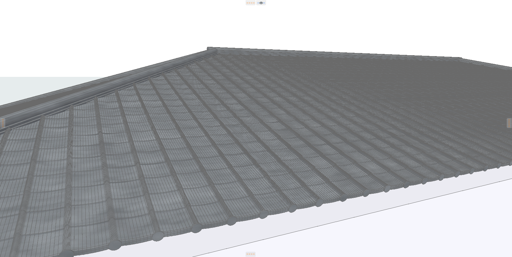
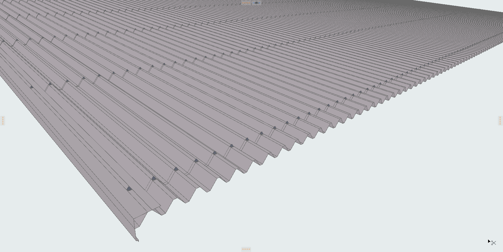

01
屋根瓦 自動配置
ArchiCADの屋根面を選択するだけで、ディテールまで作り込まれた瓦屋根を瞬時に自動生成。日本国内で多用されるJ形瓦・F形瓦はもちろん、折板屋根や金属屋根（瓦棒／立平／縦ハゼ）まで、実務で求められる5つの屋根工法に完全対応します。特に手間のかかる寄棟屋根では、4面の瓦を配置後、ArchiCADのソリッド編集（SEO）機能と連携して隅棟部を自動でカット。隅棟・大棟瓦の隅巴瓦や端キャップ、軒先の折り曲げフランジといった細部まで再現し、立面・断面ビューでは自動 LOD で描画負荷を軽減。実施設計レベルの BIM モデル作成を強力に支援します。
また折板屋根（FoldedRoof）は、現場で最も多用される重ね型 88 型を標準値として実装していますが、ピッチ（山と山の間隔）・山高さ・働き幅を mm 単位で個別に変更できるため、150 型・200 型といった大型折板や特注サイズにもパラメータ調整だけで対応可能。タイトフレーム・棟包み・ケラバ・エプロン・面戸・幕板・ボルトまでが連動して再生成されるので、断面サイズの変更にも柔軟に対応いたします。
なお、対応する屋根形式は、切妻・寄棟・方形・片流れの4種類（入母屋は現時点では非対応）です。平面形状は矩形のみで、L型・T型といった平面形状や、マンサード・腰折れなどの屋根形式は、作図自体は可能ですがサポート対象外となります。


- JTile：日本瓦（J形瓦）BRICK分割によるリアルな曲面表現、軒先90°折り曲げフランジ対応、立面・断面 LOD で作図性能向上
- FlatTile：平板瓦（F形瓦）。寄棟対応、働き寸法の調整・千鳥配置・反り角度・水切り対応、立面・断面 LOD 対応
- HipTile：隅棟・大棟兼用の専用瓦。のし瓦＋冠瓦の段数調整、隅巴瓦（大棟は両端／隅棟は軒端）、端キャップ自動配置に対応
- MetalRoof：金属屋根：瓦棒葺き・立平葺き・縦ハゼ葺きの3工法を切替可能、唐草（直角／垂直モード）に対応
- FoldedRoof：折板屋根（標準は重ね型 88 型・ピッチ／山高さ／働き幅の調整で大型折板にも対応）。タイトフレームから棟包み・ケラバ・エプロン・面戸・幕板まで一括生成、ボルト表示の切替も可能
- 共通仕様：マテリアルは「金属-亜鉛」で5屋根を統一、CineRender対応